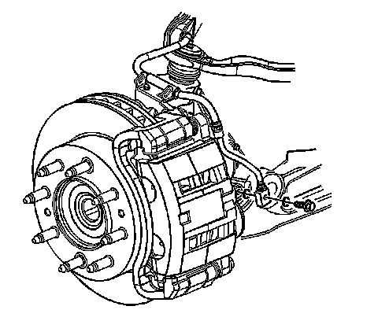
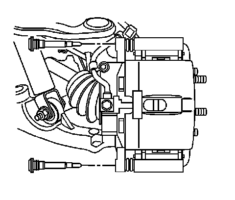

Front Brake Caliper Replacement (2500 Series)
Front Brake Caliper Replacement (2500 Series)
Caution: Refer to Brake Dust Caution.
Caution: Refer to Brake Fluid Irritant Caution.
Removal Procedure
1. Inspect the fluid level in the brake master cylinder reservoir.
2. If the brake fluid level is midway between the maximum-full point and the minimum allowable level, no brake fluid needs to be removed from the reservoir before proceeding.
3. If the brake fluid level is higher than midway between the maximum-full point and the minimum allowable level, remove brake fluid to the midway point before proceeding.
4. Raise and support the vehicle. Refer to Lifting and Jacking the Vehicle.
5. Remove the tire and wheel assembly.

6. Compress the brake caliper pistons.
1. Install 2 large C-clamps over the top of the caliper housing and against the back of the outboard brake pad.
2. Slowly tighten the C-clamps until the caliper pistons are pushed completely into the caliper bores.
3. Remove the C-clamps from the caliper.
7. Clean all dirt and debris from the brake caliper and fittings.

Important:
^ Cap or plug the brake hose to prevent brake fluid leakage and contamination of the brake system.
^ Ensure that the washers are not still attached to the brake hose or the brake caliper.
^ DO NOT re-use the washers, discard and replace with new.
Remove the brake hose to caliper bolt.
8. Remove the brake hose from the brake caliper.
9. Remove and discard the 2 copper brake hose gaskets.

Caution: Do not depress the brake pedal with the brake rotors/calipers and/or the brake drums removed. Damage to the brake system may result. If brake system damage occurs and is not repaired, vehicle damage and/or personal injury or death may result.
10. Remove the brake caliper guide pin bolts from the brake caliper.
11. Remove the brake caliper from the caliper mounting bracket.
Installation Procedure
1. Install the brake caliper to the caliper mounting bracket.
Notice: Refer to Fastener Notice.
2. Install brake caliper guide pin bolts.
Tighten the bolts to 108 N.m (80 lb ft).
3. Remove the cap or plug from the brake hose to caliper fitting.
Important: Install 2 NEW copper brake hose gaskets.
4. Assemble the 2 copper brake hose gaskets to the brake to caliper bolt and the brake hose.
5. Install the brake hose to caliper bolt.
Tighten the bolts to 45 N.m (33 lb ft).
6. Bleed the brake system. Refer to Hydraulic Brake System Bleeding.
7. Install the tire and wheel assembly.
8. Fill the master cylinder reservoir to the proper level with clean brake fluid, if necessary. Refer to Master Cylinder Reservoir Filling.